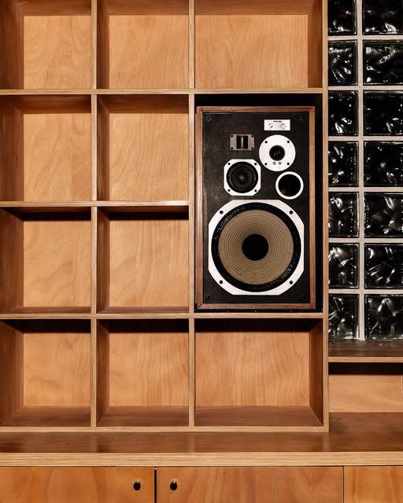

Infos pratiques
Horaires, adresse, contact.

Horaires
Jeudi à dimanche, 17h à 01h, pour le moment.
Slow opening du 24 au 27 septembre 2026.
Adresse
40 rue Saint-Jérôme
69007 Lyon
Ouvrir dans une carte (nouvel onglet)
Transports et vélo : [À CONFIRMER]
Le lieu
Avant de venir
Ancien garage de 350 m² : grande terrasse, bar (bières locales, vins vivants, cocktails) et club intimiste. Un espace resto est à venir.
Le Super7 est géré par la même équipe que le Super5.
- Tarifs d’entrée
- [À CONFIRMER]
- Âge minimum et pièce d’identité
- [À CONFIRMER]
- Accessibilité (personnes à mobilité réduite)
- [À CONFIRMER]
- Moyens de paiement
- [À CONFIRMER]
- Réservation, privatisation
- [À CONFIRMER] (téléphone ou outil existant)
- Espace resto
- À venir. Ouverture et carte : [À CONFIRMER]
Crédits photos
Photos © Super7, @super7_lyon (Instagram), reprises pour cette maquette ; à remplacer par les originaux haute définition du bar.